VOCABULARY BOOK
2つの画面で
データを共有しよう
A10では1つの画面でRoomを使いました。
今回は画面を2つにして、片方で登録した単語を、もう片方がすぐ使えるようにします。
今日のゴール
英単語と日本語を登録して、カードでめくって覚える単語帳アプリを作ります。画面は3つです。
{kind=link}
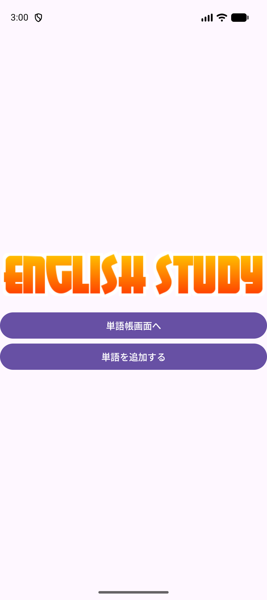
{kind=link}
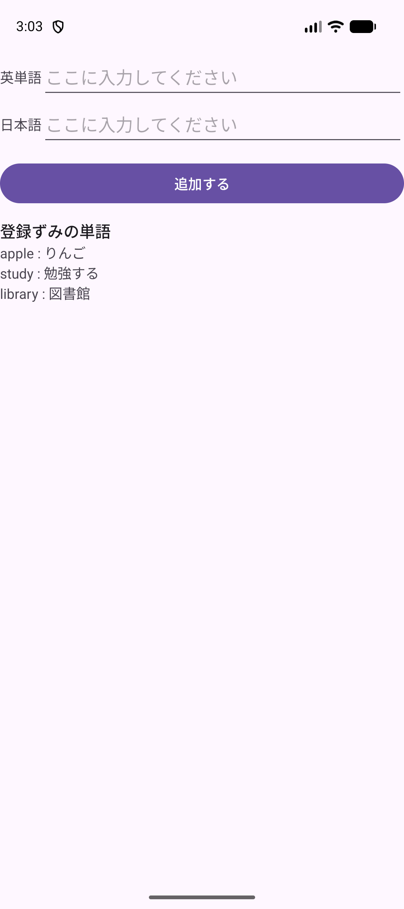
{kind=link}
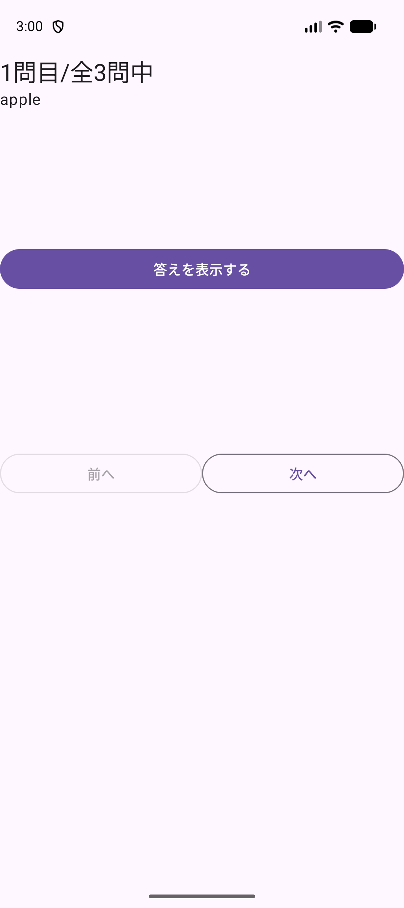
{kind=link}
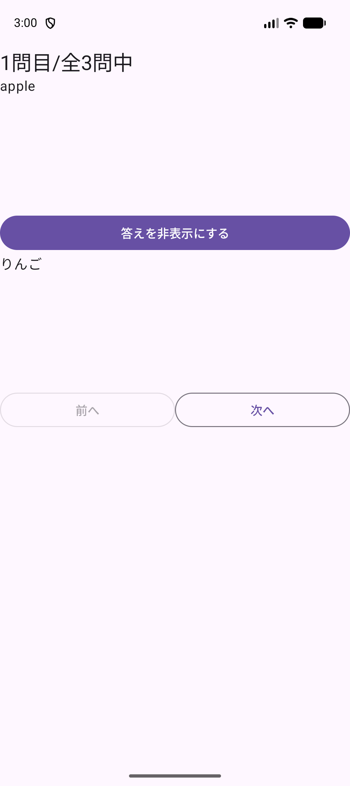
できるようになること
- 3つの画面を行き来できる。
- 同じ英単語を2回登録できないようにできる。
- 登録した単語を、別の画面のカードとして表示できる。
- 単語を追加したとき、一覧を出し直す処理を書かなくても表示が変わる仕組みを説明できる。
今日使う技術
| 技術 | どこで使うか | 学んだ単元 |
|---|---|---|
| 画面の追加と行き来 | メニュー画面から2つの画面を開く。 | A06・A07 |
Room | 単語を保存する。 | A10 |
Snackbar | 入力が空のときと、同じ単語のときに知らせる。 | A07 |
LiveData | 単語が増えたときに、自動で表示を変える。今回の新顔です。 | — |
新しく覚えることは LiveData だけです。残りはA06・A07・A10で使ったものを組み合わせます。
解説：LiveDataは何が便利か
A10では、保存したあとに毎回この1行を書きました。
itemDao.upsert(item);
txtItemList.setText(itemList(itemDao)); // 自分で出し直す画面が1つならこれで足ります。画面が2つになると困ります。単語を追加する画面で保存しても、カード画面は「保存された」ことを知りません。書き忘れると、古い内容が出たままになります。
LiveData は、データが変わったことを、見張っている画面に自分から知らせる仕組みです。一度 observe しておけば、あとは保存するだけで表示が変わります。
| A10のやり方 | LiveData（今回） | |
|---|---|---|
| 保存したあと | setText を自分で書く | 書かない |
| 書き忘れると | 古い表示のまま残る | 起きない |
| 画面が2つのとき | どちらの画面にも書く必要がある | 見張っている画面がすべて変わる |
ここで止まって、確認
できたらチェックします。困ったときはSTEP番号と画面を先生に見せましょう。
プロジェクトを作って実行
授業環境はMacと Android Studio Panda 2 | 2025.3.2 です。A10までとは別のプロジェクトを作ります。
毎回、自分で新規作成します
作る場所は Documents/Android1/A11VocabularyBook です。完成プロジェクトは答え合わせ用で、授業の入力は自分で作ったプロジェクトに書きます。
- Android Studioの New Project をクリックします。別のプロジェクトを開いているときは File → New → New Project を選びます。
- Phone and Tablet → Empty Views Activity → Next の順に選びます。名前に Views があることを確認します。
{kind=link}
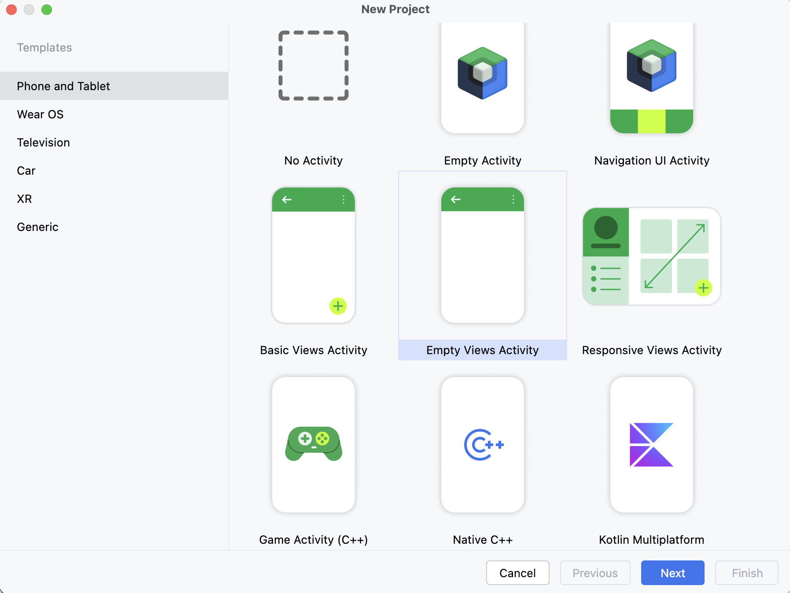
- 次の表のとおりに入力・選択して Finish を押します。
| 項目 | 入力・選択する内容 |
|---|---|
| Name | A11VocabularyBook |
| Package name | jp.ac.jec.a11vocabularybook（すべて小文字） |
| Save location | /Users/ユーザ名/Documents/Android1/A11VocabularyBook |
| Language | Java |
| Minimum SDK | API 31 ("S"; Android 12.0) |
| Build configuration language | Kotlin DSL (build.gradle.kts) [Recommended] |
{kind=link}
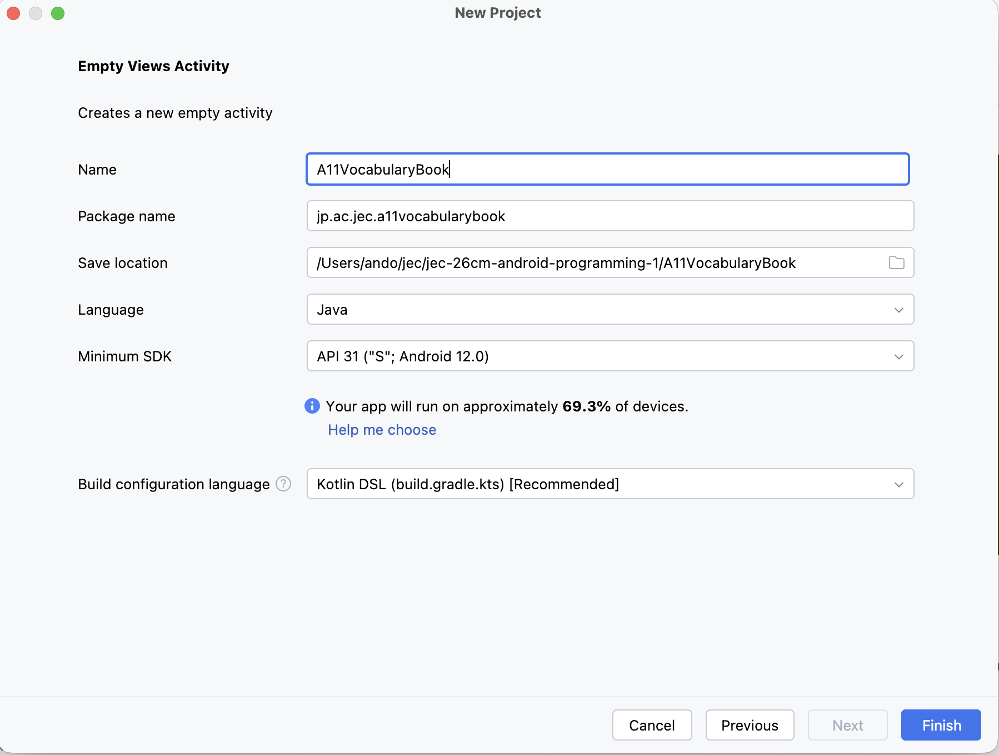
Documents/Android1/A11VocabularyBook に読み替えます。 画像を大きく開く- Sync（歯車の読み込み）が終わるまで待ちます。
- 端末欄で jec_26cm_android1_Pixel 9a を選び、Run（▶）を押します。白い画面に Hello World! が出れば成功です。
エミュレータが出てこないときは共通資料：エミュレータを見ます。
ここで止まって、確認
できたらチェックします。困ったときはSTEP番号と画面を先生に見せましょう。
画像とRoomの準備
① タイトル画像を入れる
タイトル画像の logoeng.png は、教科書といっしょに配られた教材のフォルダに入っています。Finderでコピーして、プロジェクトに入れます。A03・A05・A07・A09でやった手順と同じです。
- Finderを開き、左側の 書類 をクリックします。教材のフォルダをダブルクリックで開きます。名前は
android1-student-materials-のうしろに日付が付いた形で、日付は配られた回によって変わります。 - その中を
docs → vocabulary-book → downloadsの順に開きます。vocabulary-bookは、いま読んでいるこの教科書（index.html）が入っているフォルダです。 logoeng.pngを選び、コピーします（⌘ C）。同じフォルダにあるA11VocabularyBook.zipは完成プロジェクトです。選びません。
教材のフォルダが見つからないとき
教材のフォルダは、はじめの準備で「書類」へ移動したものです（共通資料：はじめの準備の1.）。まだ移動していなければ、先にそちらを行います。同じ教材を2回ダウンロードして名前のうしろに (1) が付いたものがあるときは、自分で判断せず先生に見せてください。
- Android Studioのプロジェクト画面で
app/src/main/res/drawableフォルダをクリックして選び、貼り付けます（⌘ V）。 - 確認のウィンドウで New name が
logoeng.png、To directory の末尾がapp/src/main/res/drawableになっていることを確かめて OK を押します。
{kind=link}
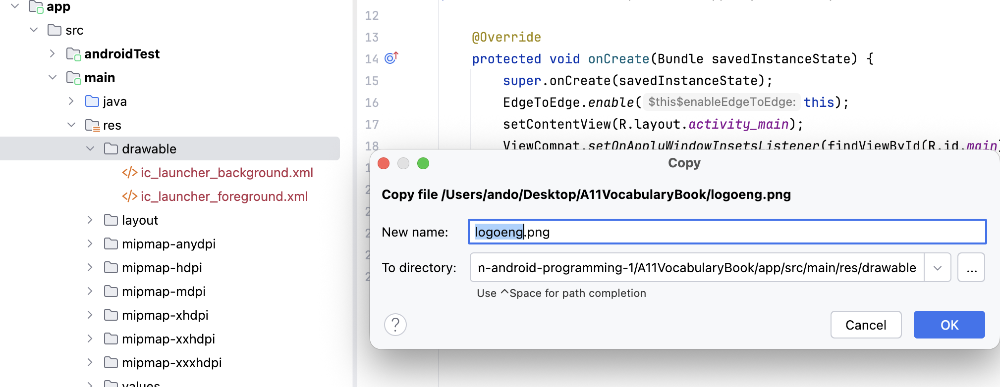
ファイル名は変えません
このあとXMLから @drawable/logoeng という名前で呼び出します。名前を変えると見つからなくなります。
② Roomを使えるようにする
Roomは、Android Studioに最初から入っている部品ではありません。使うと宣言してから使います。A10でも行った準備です。宣言は2つのファイルに分けて書きます。
1つ目は gradle/libs.versions.toml です。どの部品をどのバージョンで使うかを一覧にしておくファイルで、Android Studioがひな形として用意しています。開いて、次の3行を足します。
| 追記する場所 | 追記する行 | 意味 |
|---|---|---|
[versions] の最後 | room = "2.6.1" | Roomのバージョンに room という名前を付ける |
[libraries] の最後 | room-runtime = ... | アプリが動くときに使う本体 |
[libraries] の最後 | room-compiler = ... | ビルドのときに、書いた命令からコードを自動で作る部品 |
... と省略した部分は、次の全体から写します。足したあとのファイルは、次のとおりになります。
libs.versions.toml（全体）
[versions]
agp = "9.1.1"
junit = "4.13.2"
junitVersion = "1.3.0"
espressoCore = "3.7.0"
appcompat = "1.8.0"
material = "1.14.0"
activity = "1.13.0"
constraintlayout = "2.2.2"
room = "2.6.1"
[libraries]
junit = { group = "junit", name = "junit", version.ref = "junit" }
ext-junit = { group = "androidx.test.ext", name = "junit", version.ref = "junitVersion" }
espresso-core = { group = "androidx.test.espresso", name = "espresso-core", version.ref = "espressoCore" }
appcompat = { group = "androidx.appcompat", name = "appcompat", version.ref = "appcompat" }
material = { group = "com.google.android.material", name = "material", version.ref = "material" }
activity = { group = "androidx.activity", name = "activity", version.ref = "activity" }
constraintlayout = { group = "androidx.constraintlayout", name = "constraintlayout", version.ref = "constraintlayout" }
room-runtime = { group = "androidx.room", name = "room-runtime", version.ref = "room" }
room-compiler = { group = "androidx.room", name = "room-compiler", version.ref = "room" }
[plugins]
android-application = { id = "com.android.application", version.ref = "agp" }[plugins] に書かないこと
[libraries] と [plugins] は見た目が似ています。[plugins] のほうに書くと expected to find any of 'id' or 'version' というエラーでビルドが止まります。追記した2行から上へたどって、最初に出てくる見出しが [libraries] になっているかを確かめてください。
2つ目は app/build.gradle.kts です。開いて、dependencies { } の中の最後に2行を追加します。
implementation(libs.room.runtime)
annotationProcessor(libs.room.compiler)libs.room.runtime の libs. は、先ほど追記した libs.versions.toml のことです。room-runtime のハイフンは、ここではドット（room.runtime）に変わります。
画面の上に Sync Now というリンクが出ます。押して、読み込みが終わるまで待ちます。エラーが出なければ成功です。
ここで止まって、確認
できたらチェックします。困ったときはSTEP番号と画面を先生に見せましょう。
データベースの3ファイルを作る
A10で作った3つ（Item / ItemDao / AppDatabase）を、今回の内容で作り直します。3つとも New → Java Class で作ります。ItemDao だけ Interface を選びます。
① Item.java（Class）
Roomは、データを表の形で保存します。「1行にどんな項目があるか」を決めるのが Item クラスです。今回は、1件が「英単語」と「日本語」の2つを持ちます。
- 左側のプロジェクト画面で
app → src → main → java → jp.ac.jec.a11vocabularybook（MainActivityがあるフォルダ）を右クリックし、New → Java Class を選びます。 - New Java Class という小さなウィンドウが出ます。いちばん上の欄に、名前
Itemを入力します。 - その下の一覧（
Class・Interface・Enum…）で Class を選び、return を押します。 - できた
Item.javaの中身を、すべて次のコードに置き換えます。
package jp.ac.jec.a11vocabularybook;
import androidx.annotation.NonNull;
import androidx.room.Entity;
import androidx.room.PrimaryKey;
@Entity
public class Item {
@PrimaryKey(autoGenerate = true)
private int internalId;
@NonNull
private String english;
@NonNull
private String japanese;
public Item(@NonNull String english, @NonNull String japanese) {
this.english = english;
this.japanese = japanese;
}
public int getInternalId() {
return internalId;
}
public void setInternalId(int internalId) {
this.internalId = internalId;
}
@NonNull
public String getEnglish() {
return english;
}
public void setEnglish(@NonNull String english) {
this.english = english;
}
@NonNull
public String getJapanese() {
return japanese;
}
public void setJapanese(@NonNull String japanese) {
this.japanese = japanese;
}
@Override
public String toString() {
return english + " : " + japanese;
}
}| 書いたもの | 意味 |
|---|---|
@Entity | このクラスが表1つ分であるという印。クラス名 Item がそのまま表の名前になる |
@PrimaryKey(autoGenerate = true) | この項目（internalId）が行を見分ける番号。autoGenerate = true で、保存するたびに1・2・3…と自動で増える |
english / japanese | 保存したい2つの文字。表の項目は、番号とこの2つ |
toString() | 1件を apple : りんご の形の文字にする。STEP 05で一覧を表示するときに使われる |
@NonNull はここだけ書きます
この授業では @NonNull を自分で書きません。ただし @Entity のフィールドに付けた @NonNull は、Javaの注意書きではなく「この列は空にできない」という表の決まりそのものです。外すと表の形が変わってしまうので、ここだけは書きます。
② ItemDao.java（Interface）
次に「どう読み書きするか」を書きます。Dao は Data Access Object の略で、データベースへの窓口です。
①と同じ手順で New → Java Class を開き、名前に ItemDao と入力します。ここだけは、一覧で Interface を選びます。Class のまま作ると、中身を書いたときに赤いエラーになります。できた ItemDao.java の中身を、すべて次のコードに置き換えます。
package jp.ac.jec.a11vocabularybook;
import androidx.lifecycle.LiveData;
import androidx.room.Dao;
import androidx.room.Query;
import androidx.room.Upsert;
import java.util.List;
@Dao
public interface ItemDao {
@Query("SELECT * FROM item")
LiveData<List<Item>> getAll();
@Query("SELECT COUNT(*) FROM item WHERE english = :english")
int countByEnglish(String english);
@Upsert
void upsert(Item item);
}| 書いたもの | 意味 |
|---|---|
@Dao | このインタフェースがデータベースへの窓口であるという印 |
@Query("SELECT * FROM item") | 表の中身を全部取り出す命令。item は Item クラスから作られた表の名前 |
LiveData<List<Item>> getAll() | 今回の新顔。ただの List ではなく LiveData で受け取ると、中身が変わったときに知らせてもらえる |
@Query("SELECT COUNT(*) ...") と countByEnglish | 同じ英単語が何件あるか数える。:english はメソッドの引数のこと。重複チェックに使う |
@Upsert | A10でも使った命令。あれば書き換え、なければ追加（upsert は update と insert を合わせた言葉）。今回は単語の追加に使う |
メソッドに { } がない | 中身は、ビルドするときにRoomが自動で作る。STEP 02で足した room-compiler がその仕事をする。書くのは「何をしたいか」だけ |
= であって LIKE ではありません
WHERE english = :english は「ぴったり同じ」という意味です。LIKE にすると % や _ が特別な文字として扱われ、ちがう単語にも当たってしまいます。
③ AppDatabase.java（Class）
表（Item）と窓口（ItemDao）ができました。最後に、この2つをまとめるデータベース本体を作ります。
①と同じ手順で New → Java Class を開き、名前に AppDatabase と入力します。種類は Class です。できた AppDatabase.java の中身を、すべて次のコードに置き換えます。
package jp.ac.jec.a11vocabularybook;
import android.content.Context;
import androidx.room.Database;
import androidx.room.Room;
import androidx.room.RoomDatabase;
@Database(entities = {Item.class}, version = 1, exportSchema = false)
public abstract class AppDatabase extends RoomDatabase {
private static AppDatabase instance;
public abstract ItemDao itemDao();
/**
* データベースを取得する.
* 1つだけ作って使い回す書き方をシングルトンという.
* allowMainThreadQueries()は、読み書きを画面と同じスレッドで行うための指定.
* 本来は別スレッドで行うが、この授業では扱わない.
*/
public static AppDatabase getInstance(Context context) {
if (instance == null) {
instance = Room.databaseBuilder(context.getApplicationContext(), AppDatabase.class, "app.db")
.allowMainThreadQueries()
.build();
}
return instance;
}
}| 書いたもの | 意味 |
|---|---|
@Database(entities = {Item.class}, version = 1) | このデータベースが Item の表を持つという宣言。version は表の形を変えたときに増やす番号 |
abstract class / abstract ItemDao itemDao() | 中身はRoomが自動で作るので abstract（中身を書かない）にする。②のメソッドに { } がないのと同じ理由 |
getInstance(Context context) | データベースを取り出すメソッド。最初の1回だけ作って、あとは同じものを返す |
"app.db" | 端末に作られるファイルの名前 |
allowMainThreadQueries() | 読み書きを画面と同じ流れで行う指定。この授業ではこれを付ける |
context.getApplicationContext() を忘れない
Room.databaseBuilder(...) の最初に渡しているのは、受け取った context そのままではなく context.getApplicationContext() です。ここを context のままにすると、画面を閉じたり回したりするたびに古い画面が消えずに残り続けます。作ったデータベースはアプリが終わるまで残るため、画面ではなくアプリ全体を渡します。A10でも同じ形で書きました。
ここで止まって、確認
できたらチェックします。困ったときはSTEP番号と画面を先生に見せましょう。
メニュー画面を作る
まず入口の画面を作ります。ボタンはまだ何もしません。
app/src/main/res/layout/activity_main.xml を開き、中身をすべて置き換えます。
<?xml version="1.0" encoding="utf-8"?>
<LinearLayout xmlns:android="http://schemas.android.com/apk/res/android"
xmlns:tools="http://schemas.android.com/tools"
android:id="@+id/main"
android:layout_width="match_parent"
android:layout_height="match_parent"
android:gravity="center_vertical"
android:orientation="vertical"
tools:context=".MainActivity">
<ImageView
android:layout_width="match_parent"
android:layout_height="wrap_content"
android:contentDescription="@null"
android:src="@drawable/logoeng" />
<Button
android:id="@+id/btn_start"
android:layout_width="match_parent"
android:layout_height="wrap_content"
android:layout_marginTop="12dp"
android:text="単語帳画面へ" />
<Button
android:id="@+id/btn_add_card"
android:layout_width="match_parent"
android:layout_height="wrap_content"
android:text="単語を追加する" />
</LinearLayout>Runで確かめる
ロゴ画像と2つのボタンが出れば成功です。押しても何も起きません。
ここで止まって、確認
できたらチェックします。困ったときはSTEP番号と画面を先生に見せましょう。
単語を追加する画面を作る
2つ目の画面を追加します。A06・A07と同じ作り方です。
- 左側のプロジェクト画面で
app → src → main → java → jp.ac.jec.a11vocabularybookを右クリックします。 - New → Activity → Empty Views Activity を選びます。
{kind=link}
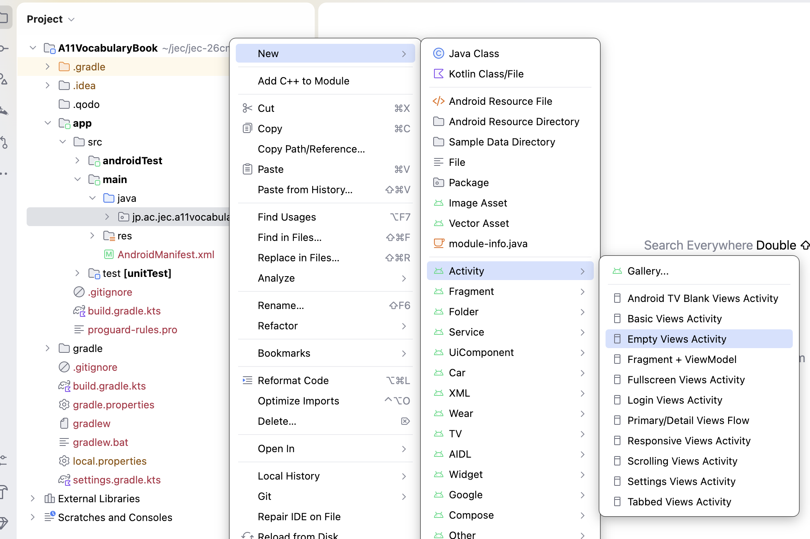
- 次の表のとおりに入力して Finish を押します。
| 項目 | 入力・選択する内容 |
|---|---|
| Activity Name | CardAddActivity |
| Generate a Layout File | チェックを入れる |
| Layout Name | activity_card_add |
| Launcher Activity | チェックを入れない |
| Package name | jp.ac.jec.a11vocabularybook |
| Source Language | Java |
{kind=link}
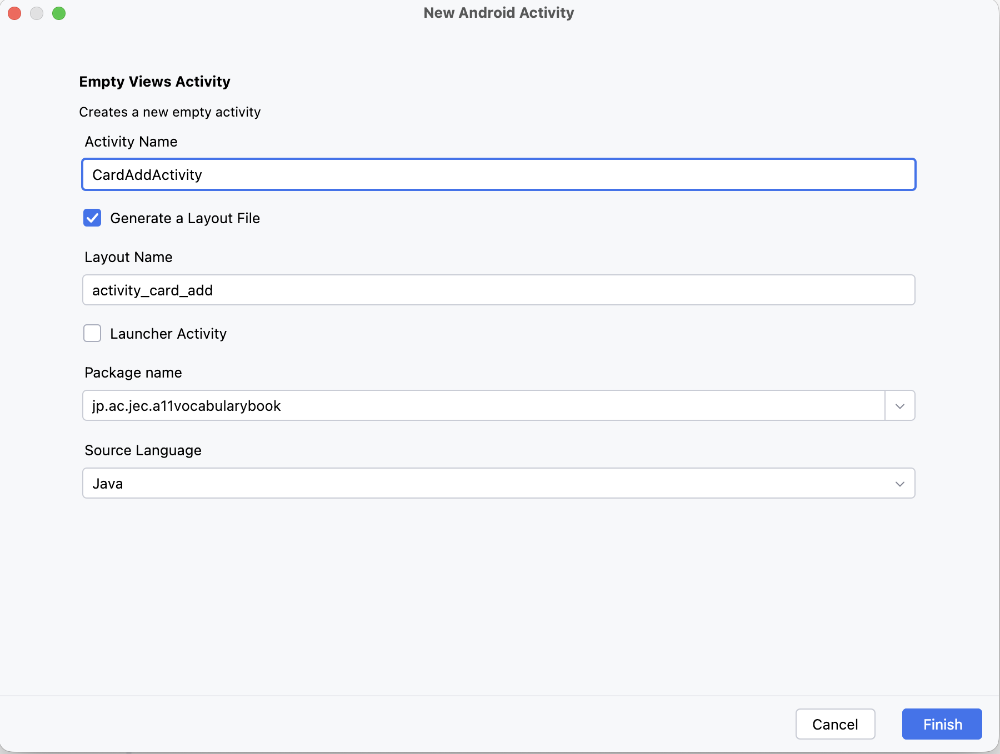
New → Java Classでは作りません
この作り方なら AndroidManifest.xml への登録も自動で行われます。New → Java Class で作ると登録されず、画面を開いたときにアプリが終了します。
あわせて app → src → main → AndroidManifest.xml を開きます。Finish を押した直後に、次の3行が増えています。自動で追加されているので、入力しません。
<activity
android:name=".CardAddActivity"
android:exported="false" />| 指定 | 意味 |
|---|---|
| <activity> | アプリの画面をAndroidに知らせる。この登録がないと、画面を開いたときにアプリが終了する。 |
| android:name=".CardAddActivity" | 登録するクラス。先頭の . は、パッケージ名 jp.ac.jec.a11vocabularybook を省いた書き方。 |
| android:exported="false" | ほかのアプリからこの画面を開けないようにする。CardAddActivity は自分のアプリの MainActivity からだけ開く。 |
なぜLauncher Activityにチェックを入れないのか
MainActivity の <activity> には <intent-filter>（MAIN と LAUNCHER）が書かれています。これは「アプリ一覧のアイコンから最初に開く画面」という印です。CardAddActivity は MainActivity から開くので、この印は要りません。
Launcher Activityにチェックを入れると、CardAddActivity にもこの印が付いて、次の2つが起きます。
- アプリ一覧に、「A11VocabularyBook」という同じ名前のアイコンが2つ並びます。名前もアイコンも同じなので、どちらが本物か見分けられません。
- Runしたときに、作ったばかりの何もない画面が起動することがあります。印の付いた画面が2つあるため、どちらから始まるかが決まらないからです。
入れてしまったときは、CardAddActivity の <activity> から <intent-filter> を消して、android:exported を false に戻します。上の3行と同じ形になれば直っています。
① 画面を作る
<?xml version="1.0" encoding="utf-8"?>
<LinearLayout xmlns:android="http://schemas.android.com/apk/res/android"
xmlns:tools="http://schemas.android.com/tools"
android:id="@+id/main"
android:layout_width="match_parent"
android:layout_height="match_parent"
android:orientation="vertical"
tools:context=".CardAddActivity">
<LinearLayout
android:layout_width="match_parent"
android:layout_height="wrap_content"
android:gravity="center_vertical"
android:orientation="horizontal">
<TextView
android:layout_width="wrap_content"
android:layout_height="wrap_content"
android:text="英単語" />
<EditText
android:id="@+id/edt_english"
android:layout_width="0dp"
android:layout_height="wrap_content"
android:layout_weight="1"
android:hint="ここに入力してください"
android:importantForAutofill="no"
android:inputType="text"
android:minHeight="48dp" />
</LinearLayout>
<LinearLayout
android:layout_width="match_parent"
android:layout_height="wrap_content"
android:gravity="center_vertical"
android:orientation="horizontal">
<TextView
android:layout_width="wrap_content"
android:layout_height="wrap_content"
android:text="日本語" />
<EditText
android:id="@+id/edt_japanese"
android:layout_width="0dp"
android:layout_height="wrap_content"
android:layout_weight="1"
android:hint="ここに入力してください"
android:importantForAutofill="no"
android:inputType="text"
android:minHeight="48dp" />
</LinearLayout>
<Button
android:id="@+id/btn_add"
android:layout_width="match_parent"
android:layout_height="wrap_content"
android:layout_marginTop="12dp"
android:text="追加する" />
<TextView
style="@style/TextAppearance.Material3.TitleMedium"
android:layout_width="wrap_content"
android:layout_height="wrap_content"
android:layout_marginTop="12dp"
android:text="登録ずみの単語" />
<ScrollView
android:layout_width="match_parent"
android:layout_height="0dp"
android:layout_weight="1"
android:fillViewport="true">
<TextView
android:id="@+id/txt_card_list"
android:layout_width="match_parent"
android:layout_height="wrap_content"
tools:text="apple : りんご" />
</ScrollView>
</LinearLayout>② 中身を書く
package jp.ac.jec.a11vocabularybook;
import android.content.Context;
import android.content.Intent;
import android.os.Bundle;
import android.widget.EditText;
import android.widget.TextView;
import androidx.activity.EdgeToEdge;
import androidx.appcompat.app.AppCompatActivity;
import androidx.core.graphics.Insets;
import androidx.core.view.ViewCompat;
import androidx.core.view.WindowInsetsCompat;
import com.google.android.material.snackbar.Snackbar;
public class CardAddActivity extends AppCompatActivity {
@Override
protected void onCreate(Bundle savedInstanceState) {
super.onCreate(savedInstanceState);
EdgeToEdge.enable(this);
setContentView(R.layout.activity_card_add);
ViewCompat.setOnApplyWindowInsetsListener(findViewById(R.id.main), (v, insets) -> {
Insets systemBars = insets.getInsets(WindowInsetsCompat.Type.systemBars());
v.setPadding(systemBars.left, systemBars.top, systemBars.right, systemBars.bottom);
return insets;
});
var edtEnglish = (EditText) findViewById(R.id.edt_english);
var edtJapanese = (EditText) findViewById(R.id.edt_japanese);
var txtCardList = (TextView) findViewById(R.id.txt_card_list);
var itemDao = AppDatabase.getInstance(this).itemDao();
// LiveDataを見張っておくと、単語が増えたときに自動で呼ばれる.
itemDao.getAll().observe(this, items -> {
var text = new StringBuilder();
for (var item : items) {
text.append(item).append("\n");
}
txtCardList.setText(text.toString());
});
findViewById(R.id.btn_add).setOnClickListener(v -> {
var english = edtEnglish.getText().toString();
var japanese = edtJapanese.getText().toString();
if (english.isEmpty() || japanese.isEmpty()) {
Snackbar.make(v, "英単語と日本語の両方を入力してください", Snackbar.LENGTH_SHORT).show();
return;
}
if (itemDao.countByEnglish(english) > 0) {
Snackbar.make(v, "すでに登録されている単語です", Snackbar.LENGTH_SHORT).show();
return;
}
// 一覧を出し直す処理は書かない. LiveDataが自動で知らせてくれる.
itemDao.upsert(new Item(english, japanese));
edtEnglish.setText("");
edtJapanese.setText("");
});
}
/**
* この画面を開く.
*/
static void start(final Context context) {
var starter = new Intent(context, CardAddActivity.class);
context.startActivity(starter);
}
}var itemDao の行から下を、上から順に読みます。
| 行のあたり | やっていること |
|---|---|
var itemDao = AppDatabase.getInstance(this).itemDao(); | データベースを取り出して、窓口（Dao）を受け取る。STEP 03の③と②で作ったものを、ここで使う |
itemDao.getAll().observe(this, items -> { … }); | getAll() が返すLiveDataを見張る。this はこの画面、items は届いた単語の一覧。一覧は、画面を開いたときにまず1回届き、そのあとは単語が増えるたびに届く。届くたびに { } の中が呼ばれる |
var text = new StringBuilder(); | StringBuilder は、文字を後ろにつなげていける入れ物。作ったときは空 |
for (var item : items) と text.append(item).append("\n"); | 一覧から単語を1件ずつ取り出し、append で入れ物の後ろにつなげる。append(item) は、Item の toString()（STEP 03 ①）で apple : りんご の形の文字にしてからつなげる。"\n" は改行 |
txtCardList.setText(text.toString()); | text.toString() で入れ物の中身を1つの文字列にして、一覧に出す |
btn_add のリスナ | 入力のどちらかが空なら止める → 同じ英単語がすでにあれば止める（countByEnglish で数える）→ upsert → 入力欄を空にする |
static void start(…) | この画面を開くためのメソッド。次の③で、メニュー画面から呼ぶ |
一覧を出し直す処理を書いていません
itemDao.upsert(...) のあとに setText がありません。これが今回の新しいところです。observe でLiveDataを見張っているので、単語が増えると observe の中が自動でもう一度呼ばれます。
③ メニュー画面からこの画面を開く
MainActivity.java の onCreate の最後に追加します。
findViewById(R.id.btn_add_card).setOnClickListener(v -> {
CardAddActivity.start(this);
});画面を開く処理は、開かれる側のクラスに start という名前で書きます。A07の BillSplitActivity.start(...) と同じ形です。ここで呼んでいるのは、②で CardAddActivity.java の最後に書いた start です。
| 書いたもの | 意味 |
|---|---|
static void start(…) | クラス名を付けて CardAddActivity.start(…) と呼べるメソッド。この画面を開く手順を、開かれる側であるこの画面自身が持つ。 |
Context context | 画面（Activity）を受け取るための型。呼ぶ側が this を渡すと、ここに入る。 |
new Intent(context, CardAddActivity.class) | 今の画面から CardAddActivity を開くための指示（Intent）を作る。 |
context.startActivity(starter) | IntentをAndroidに渡して、画面を開いてもらう。 |
Runで確かめる
- 単語を追加する を押して、この画面が出ることを確認します。
- 英単語に
apple、日本語にりんごを入れて 追加する。下の一覧に増えます。 - 同じ
appleをもう一度登録してみます。メッセージが出て、一覧は増えません。
{kind=link}
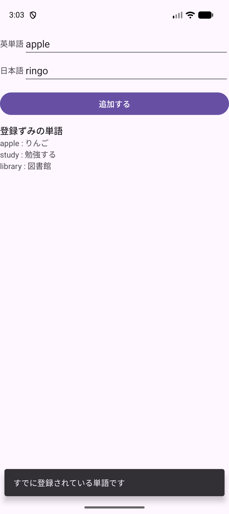
ここで止まって、確認
できたらチェックします。困ったときはSTEP番号と画面を先生に見せましょう。
カード画面を作る
3つ目の画面を追加します。STEP 05と同じ手順で、Activity Name を CardActivity、Layout Name を activity_card にします。
{kind=link}
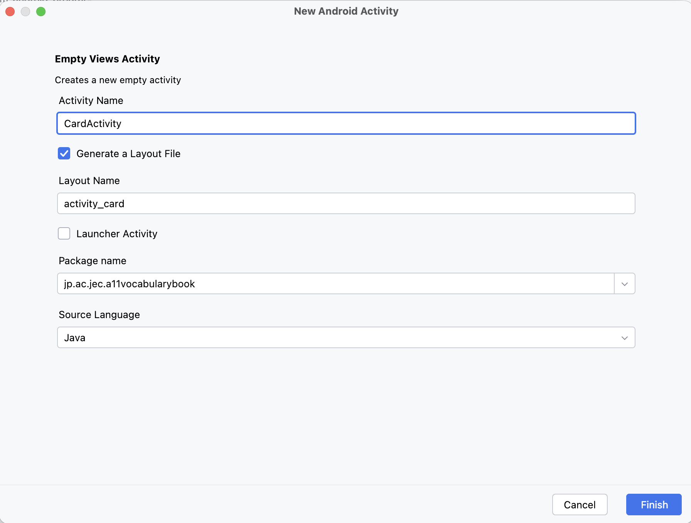
AndroidManifest.xml に <activity android:name=".CardActivity" android:exported="false" /> が自動で増えるところも、Launcher Activityにチェックを入れない理由も、STEP 05と同じです。
① 画面を作る
<?xml version="1.0" encoding="utf-8"?>
<LinearLayout xmlns:android="http://schemas.android.com/apk/res/android"
xmlns:tools="http://schemas.android.com/tools"
android:id="@+id/main"
android:layout_width="match_parent"
android:layout_height="match_parent"
android:orientation="vertical"
tools:context=".CardActivity">
<TextView
android:id="@+id/txt_question_no"
style="@style/TextAppearance.Material3.HeadlineSmall"
android:layout_width="match_parent"
android:layout_height="wrap_content"
tools:text="1問目/全3問中" />
<TextView
android:id="@+id/txt_english"
style="@style/TextAppearance.Material3.BodyLarge"
android:layout_width="match_parent"
android:layout_height="160dp"
tools:text="apple" />
<Button
android:id="@+id/btn_answer"
android:layout_width="match_parent"
android:layout_height="wrap_content"
android:text="答えを表示する" />
<TextView
android:id="@+id/txt_japanese"
style="@style/TextAppearance.Material3.BodyLarge"
android:layout_width="match_parent"
android:layout_height="160dp"
android:visibility="invisible"
tools:text="りんご" />
<LinearLayout
android:layout_width="match_parent"
android:layout_height="wrap_content"
android:orientation="horizontal">
<Button
android:id="@+id/btn_back"
style="@style/Widget.Material3.Button.OutlinedButton"
android:layout_width="0dp"
android:layout_height="wrap_content"
android:layout_weight="1"
android:enabled="false"
android:text="前へ" />
<Button
android:id="@+id/btn_next"
style="@style/Widget.Material3.Button.OutlinedButton"
android:layout_width="0dp"
android:layout_height="wrap_content"
android:layout_weight="1"
android:enabled="false"
android:text="次へ" />
</LinearLayout>
</LinearLayout>btn_back と btn_next に android:enabled="false" が付いています。単語が届く前に押されると落ちるので、最初は押せない状態から始めます。
② 中身を書く
package jp.ac.jec.a11vocabularybook;
import android.content.Context;
import android.content.Intent;
import android.os.Bundle;
import android.view.View;
import android.widget.Button;
import android.widget.TextView;
import androidx.activity.EdgeToEdge;
import androidx.appcompat.app.AppCompatActivity;
import androidx.core.graphics.Insets;
import androidx.core.view.ViewCompat;
import androidx.core.view.WindowInsetsCompat;
import com.google.android.material.snackbar.Snackbar;
import java.util.ArrayList;
import java.util.List;
public class CardActivity extends AppCompatActivity {
private final List<Item> cardList = new ArrayList<>();
private int cardIndex;
// 次の6つは、onCreate以外のメソッド(updateCardView)からも使うためフィールドにする
private TextView txtQuestionNo;
private TextView txtEnglish;
private TextView txtJapanese;
private Button btnBack;
private Button btnNext;
private Button btnAnswer;
@Override
protected void onCreate(Bundle savedInstanceState) {
super.onCreate(savedInstanceState);
EdgeToEdge.enable(this);
setContentView(R.layout.activity_card);
ViewCompat.setOnApplyWindowInsetsListener(findViewById(R.id.main), (v, insets) -> {
Insets systemBars = insets.getInsets(WindowInsetsCompat.Type.systemBars());
v.setPadding(systemBars.left, systemBars.top, systemBars.right, systemBars.bottom);
return insets;
});
txtQuestionNo = (TextView) findViewById(R.id.txt_question_no);
txtEnglish = (TextView) findViewById(R.id.txt_english);
txtJapanese = (TextView) findViewById(R.id.txt_japanese);
btnBack = (Button) findViewById(R.id.btn_back);
btnNext = (Button) findViewById(R.id.btn_next);
btnAnswer = (Button) findViewById(R.id.btn_answer);
var itemDao = AppDatabase.getInstance(this).itemDao();
// LiveDataを見張っておくと、単語が増えたときに自動で呼ばれる.
itemDao.getAll().observe(this, items -> {
cardList.clear();
cardList.addAll(items);
if (cardList.isEmpty()) {
Snackbar.make(findViewById(R.id.main), "単語がありません", Snackbar.LENGTH_INDEFINITE)
.setAction("単語を追加する", v -> {
CardAddActivity.start(this);
}).show();
return;
}
if (cardIndex > cardList.size() - 1) {
cardIndex = cardList.size() - 1;
}
updateCardView();
});
btnBack.setOnClickListener(v -> {
cardIndex--;
updateCardView();
});
btnNext.setOnClickListener(v -> {
cardIndex++;
updateCardView();
});
btnAnswer.setOnClickListener(v -> {
var isVisible = (txtJapanese.getVisibility() == View.VISIBLE);
txtJapanese.setVisibility(isVisible ? View.INVISIBLE : View.VISIBLE);
btnAnswer.setText(isVisible ? "答えを表示する" : "答えを非表示にする");
});
}
/**
* この画面を開く.
*/
static void start(final Context context) {
var starter = new Intent(context, CardActivity.class);
context.startActivity(starter);
}
/**
* いま表示するカードの内容にそろえる.
*/
private void updateCardView() {
var card = cardList.get(cardIndex);
txtQuestionNo.setText((cardIndex + 1) + "問目/全" + cardList.size() + "問中");
txtEnglish.setText(card.getEnglish());
txtJapanese.setText(card.getJapanese());
// カードを変えたら、答えは隠した状態に戻す.
txtJapanese.setVisibility(View.INVISIBLE);
btnAnswer.setText("答えを表示する");
btnBack.setEnabled(cardIndex > 0);
btnNext.setEnabled(cardIndex < cardList.size() - 1);
}
}
| 書いたもの | 意味 |
|---|---|
cardList.clear() してから addAll | LiveDataは変わるたびに呼ばれる。clearを忘れると、戻ってくるたびに一覧が二重になる |
Snackbar.LENGTH_INDEFINITE と .setAction("単語を追加する", v -> { … }) | 単語が1件もないときに出すメッセージ。LENGTH_INDEFINITE は、時間がたっても消えない設定。setAction は、メッセージの右にボタンを付ける。1つ目がボタンの文字、2つ目が押したときの処理で、ここでは単語を追加する画面を開く。すぐ下の return で、カードを出す処理には進まない |
cardIndex の調整 | いま見ているカードが最後より後ろにならないようにそろえる |
isVisible ? View.INVISIBLE : View.VISIBLE | btn_answer のリスナの中。isVisible には、答え（日本語）がいま見えていれば true、隠れていれば false が入る。条件 ? A : B は三項演算子といい、if / else を1行で書いた形。条件が true なら A、false なら B になる。見えていれば隠し、隠れていれば見せる。次の行も同じ形で、ボタンの文字を切り替える |
| 6つのViewをフィールドにする | updateCardView() からも使うので、onCreate で1回だけ探してフィールドに入れておく。同じidを2回 findViewById しない |
updateCardView() | 問題番号・英単語・日本語・ボタンの押せる／押せないを、まとめてそろえる |
setVisibility(View.INVISIBLE) | カードを送ったら、答えは隠した状態に戻す |
③ メニュー画面からこの画面を開く
findViewById(R.id.btn_start).setOnClickListener(v -> {
CardActivity.start(this);
});Runで確かめる
- 単語帳画面へ を押します。1問目が出ます。前へ は押せません。
- 答えを表示する を押すと日本語が出て、ボタンの文字が変わります。
- 次へ を押すと2問目になり、答えはまた隠れます。
- 最後のカードでは 次へ が押せなくなります。
{kind=link}
{kind=link}
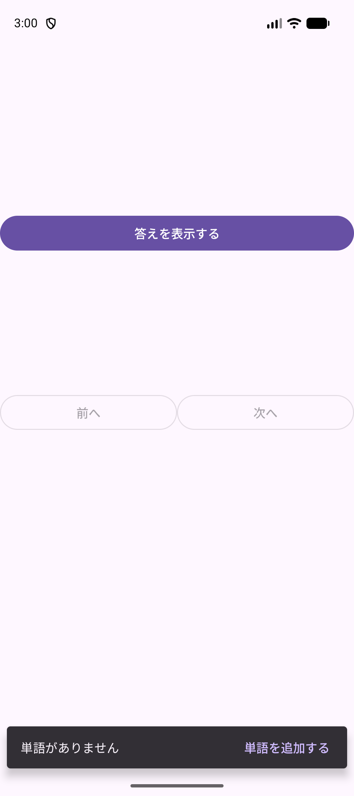
ここで止まって、確認
できたらチェックします。困ったときはSTEP番号と画面を先生に見せましょう。
完成
完成した MainActivity.java です。
package jp.ac.jec.a11vocabularybook;
import android.os.Bundle;
import androidx.activity.EdgeToEdge;
import androidx.appcompat.app.AppCompatActivity;
import androidx.core.graphics.Insets;
import androidx.core.view.ViewCompat;
import androidx.core.view.WindowInsetsCompat;
public class MainActivity extends AppCompatActivity {
@Override
protected void onCreate(Bundle savedInstanceState) {
super.onCreate(savedInstanceState);
EdgeToEdge.enable(this);
setContentView(R.layout.activity_main);
ViewCompat.setOnApplyWindowInsetsListener(findViewById(R.id.main), (v, insets) -> {
Insets systemBars = insets.getInsets(WindowInsetsCompat.Type.systemBars());
v.setPadding(systemBars.left, systemBars.top, systemBars.right, systemBars.bottom);
return insets;
});
findViewById(R.id.btn_start).setOnClickListener(v -> {
CardActivity.start(this);
});
findViewById(R.id.btn_add_card).setOnClickListener(v -> {
CardAddActivity.start(this);
});
}
}完成チェック
上から順に操作します。単語が1件もない状態から確かめるので、アプリを消してから始めます。消し方は共通資料：エミュレータの「アプリを消す」にあります。
表の戻る操作は、画面の端から内側へのスワイプ、またはエミュレータの ◁ です。キーボードが出ているときは、1回目でキーボードが閉じるので、もう一度行います。アプリを終了するときは、エミュレータでアプリ一覧（最近使ったアプリ）を開き、このアプリを上へスワイプします。アプリ一覧は、画面下の横棒を上へスワイプしてから止めると出ます。
| 操作 | 確認する結果 |
|---|---|
| アプリを消してから初回起動 | ロゴ画像と、「単語帳画面へ」「単語を追加する」の2つのボタンが出る。 |
| 「単語帳画面へ」→ メッセージの右の「単語を追加する」 | 「単語がありません」と出て、「前へ」「次へ」は押せない。「単語を追加する」を押すと、単語を追加する画面に切り替わる。「登録ずみの単語」の下は空。 |
| 何も入れずに「追加する」 | 「英単語と日本語の両方を入力してください」が出て、一覧は増えない。 |
| apple と りんご を「追加する」 | 押してすぐ、一覧に「apple : りんご」が出る。2つの入力欄は空になる。 |
| study と 勉強する も追加 → もう一度 apple と りんご を追加 | 一覧が2行になる。2回目の apple は「すでに登録されている単語です」が出て、一覧は増えない。 |
| 戻る操作 | カード画面に戻る。「単語がありません」は消えていて、「1問目/全2問中」と apple が出ている。 |
| 「答えを表示する」→「次へ」 | りんご が出て、ボタンが「答えを非表示にする」に変わる。「次へ」で2問目の study になり、答えはまた隠れる。「次へ」は押せなくなる。 |
| アプリを終了して開き直す | 「単語帳画面へ」を押すと、登録した2件が残っていて、「1問目/全2問中」と apple が出る。 |
練習
上から順に試します。予想 → 変更 → Run → 説明 → 元に戻すの順で行います。3つともコードを書き換えるので、1つ試すごとに元に戻してから次へ進みます。
CardAddActivityのobserveの中を消してRunする。単語を追加したとき、一覧はどうなるか。確かめたら元に戻す。CardActivityのcardList.clear()を消してRunする。単語を追加してカード画面に戻ると、全何問中になるか。確かめたら元に戻す。activity_card.xmlのandroid:enabled="false"を2つとも消してRunし、単語が0件の状態で 次へ を押すとどうなるか確かめる。確かめたら元に戻す。
完成版に戻してから確認
練習1の observe の中、練習2の cardList.clear()、練習3の android:enabled="false"（btn_back と btn_next の2つ）を元に戻します。戻したらRunして、単語を追加するとその場で「登録ずみの単語」に出ること、カード画面が「全2問中」のように追加した件数を数えること、単語が0件のときに「前へ」「次へ」が押せないことを確かめます。練習3を戻さないままだと、単語が0件のときに「次へ」を押すとアプリが終了します。
保存
自分の Documents/Android1/A11VocabularyBook を保存します。
教材のチェックは自分用です。先生への送信はしません。印刷は ⌘ P で行えます。
ここで止まって、確認
できたらチェックします。困ったときはSTEP番号と画面を先生に見せましょう。
困ったとき
| 症状 | 見るところ |
|---|---|
| ボタンを押すとアプリが終了する | STEP 05。画面を New → Java Class で作ると AndroidManifest.xml に登録されません。New → Activity → Empty Views Activity で作り直します |
| アプリ一覧のアイコンが2つある（Runすると何もない画面から始まることがある） | STEP 05・06でLauncher Activityにチェックを入れた可能性があります。その画面の <activity> から <intent-filter> を消し、android:exported="false" にします |
| 一覧が二重に増える | STEP 06②。cardList.clear() を書いたか |
expected to find any of 'id' or 'version' | STEP 02②。[libraries] に書いたか |
ItemDao の中で赤いエラーが出る | STEP 03②。Class ではなく Interface で作ったか |
| 同じ単語が登録できてしまう | STEP 03②。countByEnglish が = になっているか |
| ロゴ画像が見つからない | STEP 02①。ファイル名を logoeng.png のままにしたか |
| importの赤い波線が消えない | 共通資料：Auto Import |
| エミュレータが出てこない | 共通資料：エミュレータ |
| 画面を回すと見ていたカードが1問目に戻る | 共通資料：開発Tips のC章。登録した単語は消えません |
完成プロジェクトを開く
答え合わせ用の見本です。教科書といっしょに配られた教材のフォルダに、そのまま開ける形で入っています。ダウンロードも展開も要りません。授業の入力は自分で作ったプロジェクトに書きます。
- Android Studioの Open（プロジェクトを開いているときは File → Open）で、書類（
Documents）にある教材のフォルダを開きます。名前はandroid1-student-materials-のうしろに日付が付いた形で、日付は配られた回によって変わります。いま読んでいるこの教科書が入っているフォルダです。 - その中を
samples → A11VocabularyBookの順に開き、settings.gradle.ktsとappが入ったA11VocabularyBookフォルダを選びます。 - Sync後にRunして動きを確認します。授業の入力に戻るときは自分の
Documents/Android1/A11VocabularyBookを開きます。
教材のフォルダが手元にないときは、同じ見本をZIPで受け取れます（A11VocabularyBook.zip）。展開してできた A11VocabularyBook フォルダを、同じようにOpenで選びます。
完成した activity_main.xml
<?xml version="1.0" encoding="utf-8"?>
<LinearLayout xmlns:android="http://schemas.android.com/apk/res/android"
xmlns:tools="http://schemas.android.com/tools"
android:id="@+id/main"
android:layout_width="match_parent"
android:layout_height="match_parent"
android:gravity="center_vertical"
android:orientation="vertical"
tools:context=".MainActivity">
<ImageView
android:layout_width="match_parent"
android:layout_height="wrap_content"
android:contentDescription="@null"
android:src="@drawable/logoeng" />
<Button
android:id="@+id/btn_start"
android:layout_width="match_parent"
android:layout_height="wrap_content"
android:layout_marginTop="12dp"
android:text="単語帳画面へ" />
<Button
android:id="@+id/btn_add_card"
android:layout_width="match_parent"
android:layout_height="wrap_content"
android:text="単語を追加する" />
</LinearLayout>